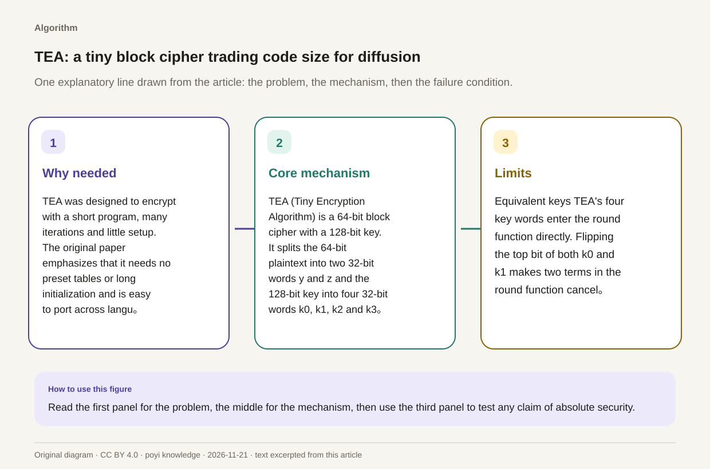
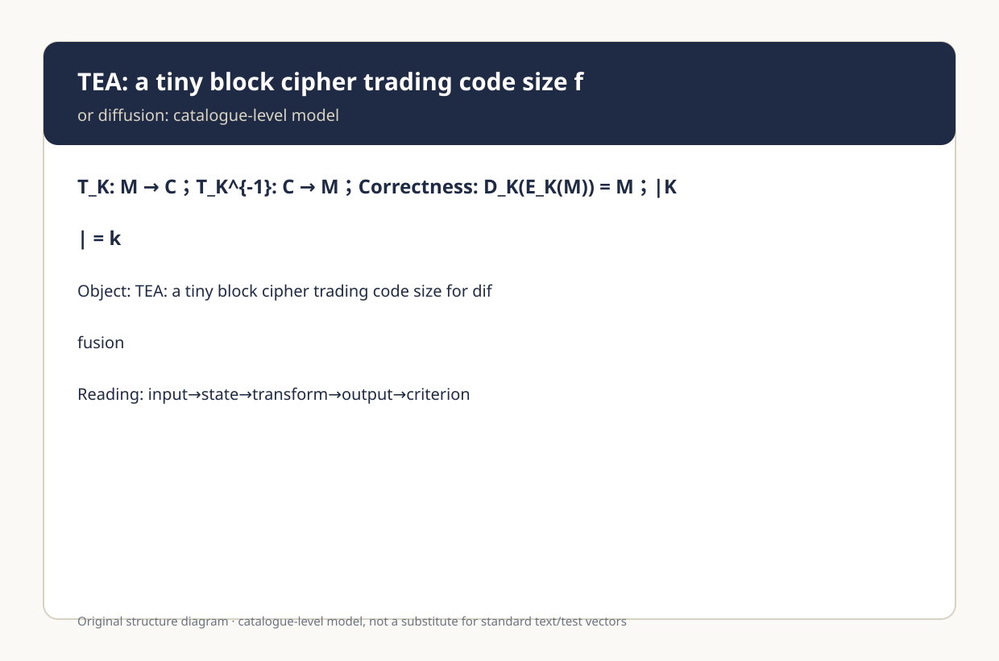

Principles
Algorithm: Tiny Encryption Algorithm (TEA 微型加密算法). TEA (Tiny Encryption Algorithm) is a 64-bit block cipher with a 128-bit key. It splits the 64-bit plaintext into two 32-bit words y and z and the 128-bit key into four 32-bit words k0, k1, k2 and k3, then runs 32 cycles; each cycle contains two Feistel-style mixes, so it is often described as 64 rounds. Each cycle first adds the golden-ratio constant delta = 0x9e3779b9, then updates y and z:
sum += delta
y += ((z << 4) + k0) xor (z + sum) xor ((z >> 5) + k1)
z += ((y << 4) + k2) xor (y + sum) xor ((y >> 5) + k3)
All additions are modulo 2^32, and the shifts and XORs are 32-bit operations. Decryption runs the 32 cycles in reverse: sum starts at delta * 32, the z update is inverted first, then the y update, and delta is subtracted last. TEA has no key schedule: the four key words go directly into the round function. This is one reason its code is so short, and it is also the source of the equivalent-key problem. TEA needs no S-box, lookup table or precomputation; the round function is only addition, shifts and XOR, suitable for a very small implementation.

Why it matters
TEA was designed to encrypt with a short program, many iterations and little setup. The original paper emphasizes that it needs no preset tables or long initialization and is easy to port across languages and machines; that simplicity is attractive when code size or resources are tight.
TEA is also a clear sample of ARX design: there is no S-box, and the nonlinearity comes from the combination of addition, shifts and XOR; each round cross-mixes y and z, and 32 cycles spread a local change across both 32-bit words. Its code fits in a dozen lines, which makes it a common teaching implementation.
But TEA's simplicity has a price. The four key words are used directly, so every key has three equivalent keys and the effective key length is only 126 bits; related-key attacks have also been shown. A 64-bit block has a narrower birthday bound than a 128-bit block. TEA is a historical and teaching case, not a choice for new designs.
Applications
TEA has been used in software and embedded settings because it needs no tables, has short code and ports easily. The original paper aimed at a short program that runs on most machines; this made TEA an early representative of lightweight block ciphers.
TEA's reference test vector is zero plaintext, zero key and 32 cycles:
plaintext 0000000000000000
key 00000000000000000000000000000000
ciphertext 41ea3a0a94baa940
This article's teaching implementation reproduces this vector and verifies that decryption returns zero plaintext. It also demonstrates equivalent keys: flipping the top bits of k0/k1, of k2/k3, or of all four words yields exactly the same ciphertext.
TEA defines only the block cipher, not a mode of operation. Real use still requires CBC, CTR or another mode; and TEA's 64-bit block and key weaknesses mean it should not be used in new protocols or for long-term data protection.

Limits & attacks
TEA's four key words enter the round function directly. Flipping the top bit of both k0 and k1 makes two terms in the round function cancel; the same holds for k2 and k3. Every key therefore has three equivalent keys, four keys produce the same ciphertexts, and the effective key length is only 126 bits. This is a structural result, not an implementation bug.
TEA's simple key use also enables related-key attacks. Needham and Wheeler noted in their 1997 TEA extensions that TEA's mixing appears unbroken, but related-key attacks are possible; constructing 2^32 texts under two related keys seems impractical. They also noted that the effective key length is 126 bits, not 128.
TEA's block is only 64 bits. Compared with a 128-bit block, the birthday bound is narrower; when processing large data volumes, a 64-bit block limits the number of blocks that can be encrypted safely. TEA does not include a per-key encryption limit like later standards.
TEA provides only a block-cipher pseudorandom permutation, not integrity. Flipping ciphertext changes the corresponding plaintext, but TEA itself cannot detect it; when authentication is needed, use AEAD or encrypt-then-MAC.
This article's teaching implementation handles only TEA fixed vectors, 32-cycle encryption/decryption and the equivalent-key demonstration. It does not generate keys, run in constant time, implement a mode of operation, protocol, key management or side-channel defenses, and must not be used in production.
History
TEA was proposed by David Wheeler and Roger Needham at the 1994 Fast Software Encryption workshop; the paper emphasizes a short program, many iterations, no preset tables and easy portability. Its simplicity made it a common example in teaching and embedded implementations.
In 1997, Needham and Wheeler published TEA extensions, revising TEA's key schedule and key introduction to form XTEA. XTEA still uses a 64-bit block, 128-bit key and 64 rounds, but its round function and key schedule differ; it is a separate entity and must not be merged into TEA.
TEA's historical value is that it shows both the possibilities and the limits of a minimal ARX design: very little code can produce diffusion, but equivalent-key and related-key problems appear. Later lightweight ciphers weighed simplicity against a more careful key schedule.
Worked example & verification
Worked example
Take one published or standard test vector, record the input, the ordered steps and the byte-exact output, then compare with an independent implementation. Where no citable numeric vector is available, the entry records only structural steps and does not invent an output.
References
- Wikipedia search entry for TEA 微型加密算法. https://zh.wikipedia.org/w/index.php?search=TEA%20%E5%BE%AE%E5%9E%8B%E5%8A%A0%E5%AF%86%E7%AE%97%E6%B3%95
- Handbook of Applied Cryptography (Menezes, van Oorschot, Vanstone). https://www.cacr.math.uwaterloo.ca/hac/